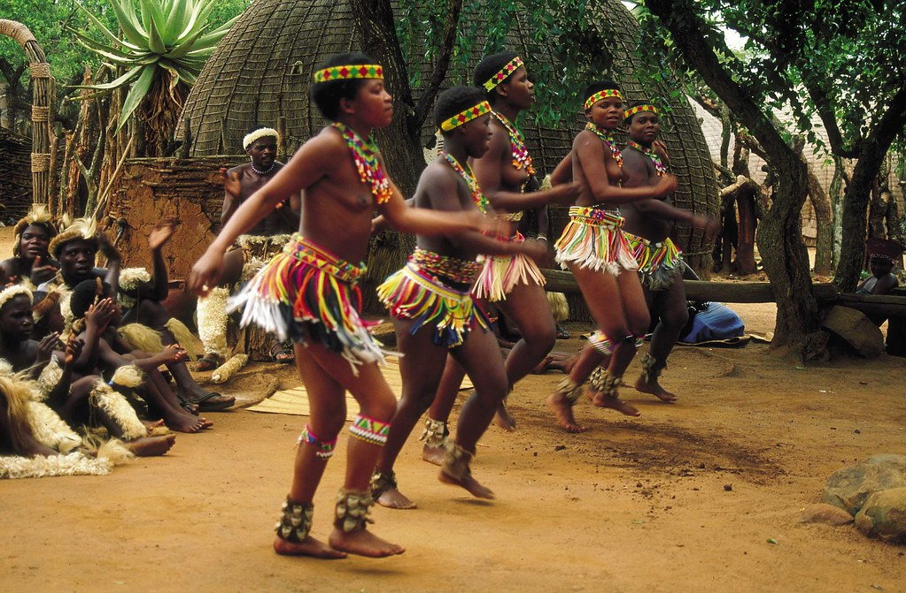
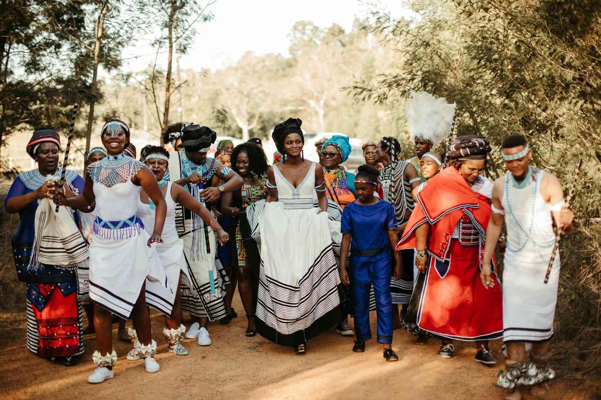
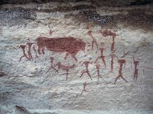
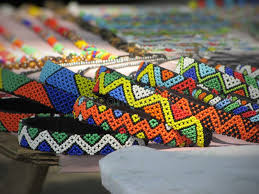

Traditional Cultures – Zulu, Xhosa & San peoples
South Africa is home to diverse traditional cultures with deep histories. The Zulu people are known for vibrant dances, warrior traditions, and intricate beadwork. The Xhosa preserve rich oral storytelling, ceremonies, and colorful attire. The San peoples, among the oldest inhabitants of southern Africa, are renowned for rock art, hunting traditions, and spiritual connections to the land.
Visiting cultural villages, attending ceremonies, and exploring crafts provides insight into these communities’ ways of life. These experiences highlight South Africa’s heritage, artistry, and social traditions across generations.